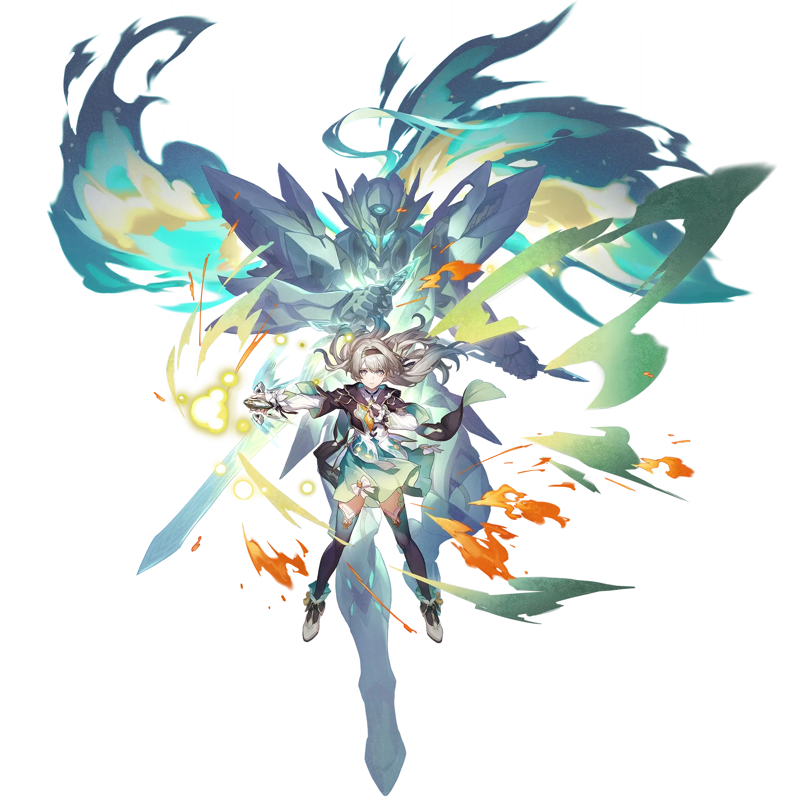

Firefly
Best Firefly build guide for Honkai Star Rail. See Firefly's best Relics, Light Cones, teams, Eidolons, Trace priority, and how to play Firefly.
🔍 Detail Skill
Semua skill aktif dan pasif beserta efeknya.
Deals Fire DMG equal to #1[i]% of SAM's ATK to a single target enemy.
Restores HP by an amount equal to 20% of this unit's Max HP. Deals Fire DMG equal to #1[i]% of SAM's ATK to one designated enemy target
Consumes HP equal to 40% of this unit's Max HP and regenerates a fixed amount of Energy equal to #2[i]% of this unit's Max Energy. Deals Fire DMG equal to #1[i]% of SAM's ATK to one designated enemy target. If the current HP is not sufficient, reduces SAM's HP to 1 when using this Skill. Advances this unit's next Action by 25%.
Restores HP by an amount equal to 25% of this unit's Max HP. Adds Fire Weakness to one designated enemy target and its adjacent targets, lasting for 2 turns. Deals Fire DMG equal to (0.2 × Break Effect + #1[i]%) of SAM's ATK to this target. At the same time, deals Fire DMG equal to (0.1 × Break Effect + #2[i]%) of SAM's ATK to adjacent targets. The Break Effect taken into the calculation is capped
The lower the HP, the less DMG received. When HP is 20% or lower, the DMG Reduction reaches its maximum effect, reducing up to #1[i]%. During the Complete Combustion, the DMG Reduction remains at its maximum effect, and the Effect RES increases by #2[i]%. If Energy is lower than 50% when the battle starts, regenerates Energy to 50%. Once Energy is regenerated to its maximum, dispels all debuffs on
Leaps into the air and moves about freely for 5 seconds, which can be ended early by launching a plunging attack. When the duration ends, plunges and immediately attacks all enemies within a set area. At the start of each wave, applies a Fire Weakness to all enemies, lasting for 2 turn(s). Then, deals Fire DMG equal to 200% of SAM's ATK to all enemies.
⚔ Light Cone Terbaik
Diurutkan dari yang paling kuat. Persentase menunjukkan performa relatif terhadap pilihan terbaik.
💎 Relic Set Terbaik
Set terbaik untuk karakter ini, diurutkan berdasarkan prioritas.
📊 Stat Utama
Stat yang dicari pada tiap slot.
👥 Tim yang Direkomendasikan
Karakter yang sering dipasangkan bersama Firefly.
 The Dahlia
The Dahlia
 Ruan Mei
Ruan Mei
 Tingyun • Fugue
Tingyun • Fugue
 Trailblazer • Harmony
Trailblazer • Harmony
 Lingsha
Lingsha
 Gallagher
Gallagher
🔗 Lanjutkan
Build ini dirangkum dari Prydwen Institute. Starwise tidak menghitung sendiri. Angka bisa berubah setelah patch atau karakter baru rilis.